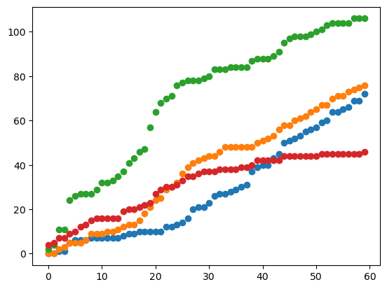
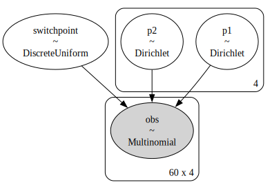
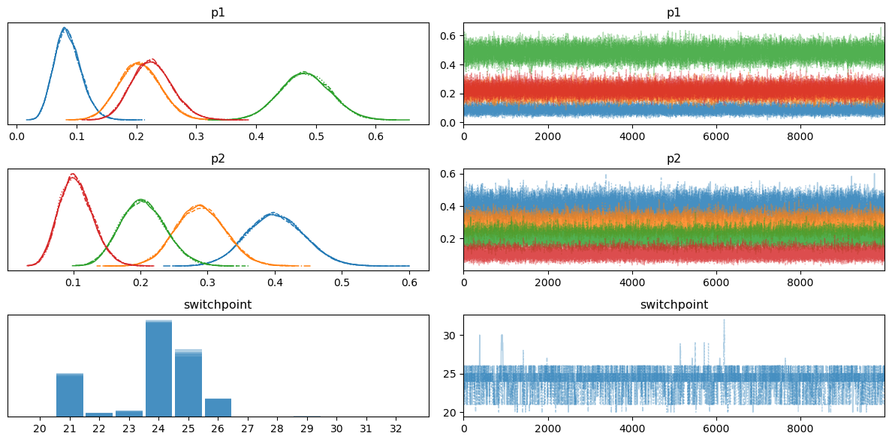
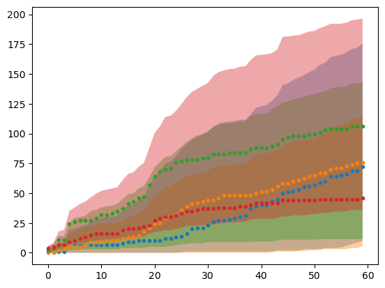
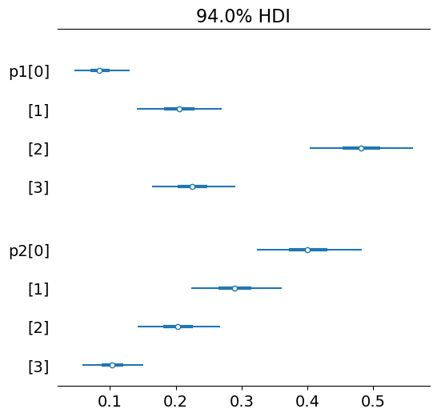
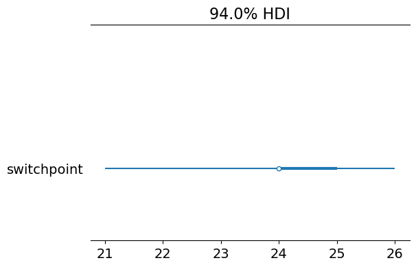

import arviz as az
import pandas as pd
import matplotlib.pyplot as plt
import numpy as npimport pymc as pm
print(f"Running on PyMC v{pm.__version__}")Running on PyMC v5.16.2n_cats = 4p1 = np.array([0.1, 0.2, 0.5, 0.2])[:n_cats]
p1 = p1 / (p1.sum())
p1array([0.1, 0.2, 0.5, 0.2])p2 = np.array([0.4, 0.3, 0.2, 0.1])[:n_cats]
p2 = p2 / (p2.sum())
p2array([0.4, 0.3, 0.2, 0.1])n_counts = 10samples_per_period = 150tot_sample_size = int(samples_per_period / n_counts)data1 = np.random.multinomial(1, p1, size = samples_per_period)data2 = np.random.multinomial(1, p2, size = samples_per_period)data = np.vstack([data1, data2]).astype(np.float32)random_data_split = True
no_splits = 60if random_data_split:
idx = np.sort(np.random.choice(np.arange(0, len(data)), size = no_splits -1, replace=False))
#idx = np.append([0], idx)
data = data = np.vstack(
[x.sum(axis=0) for x in np.split(data, idx)]
)
else:
data = np.vstack(
[x.sum(axis=0) for x in np.split(data, data.shape[0]//n_counts)]
)plt.plot(data.cumsum(axis=0), linewidth = 0, marker = 'o')
n_samples_prior = int(10 / n_counts)p1a = categorical_dirichlet(
x = data[:n_samples_prior,:].sum(axis = 0),
dirichlet_prior=Dirichlet(alpha = [1,1,1,1])
).alpha
p1aarray([1., 1., 3., 5.])p2a = categorical_dirichlet(
x = data[-n_samples_prior:,:].sum(axis = 0),
dirichlet_prior=Dirichlet(alpha = [1,1,1,1])
).alpha
p2aarray([4., 2., 1., 2.])with pm.Model() as model:
switchpoint = pm.DiscreteUniform("switchpoint", lower=0, upper=data.shape[0])
# Priors for pre- and post-switch rates number of disasters
p1m = pm.Dirichlet('p1', a = p1a)
p2m = pm.Dirichlet('p2', a = p2a)
idx = np.hstack([np.arange(0,len(data)).reshape(-1,1)]*n_cats)
p = pm.math.switch(switchpoint >= idx,
[p1m]*data.shape[0],
[p2m]*data.shape[0])
obs = pm.Multinomial("obs", data.sum(axis=1), p, observed=data)import osos.environ['PATH'] += ':/home/kantundpeterpan/miniconda3/envs/pymc/bin'pm.model_to_graphviz(model)
with model:
idata = pm.sample(10000)Multiprocess sampling (4 chains in 4 jobs)
CompoundStep
>Metropolis: [switchpoint]
>NUTS: [p1, p2]/home/kantundpeterpan/miniconda3/envs/pymc/lib/python3.10/site-packages/rich/live.py:231: UserWarning: install
"ipywidgets" for Jupyter support
warnings.warn('install "ipywidgets" for Jupyter support')
Sampling 4 chains for 1_000 tune and 10_000 draw iterations (4_000 + 40_000 draws total) took 174 seconds.axes_arr = az.plot_trace(idata)
plt.draw()
plt.gcf().tight_layout()
pp = pm.sample_posterior_predictive(idata, model)Sampling: [obs]/home/kantundpeterpan/miniconda3/envs/pymc/lib/python3.10/site-packages/rich/live.py:231: UserWarning: install
"ipywidgets" for Jupyter support
warnings.warn('install "ipywidgets" for Jupyter support')
ppp = pm.sample_prior_predictive(model = model)Sampling: [obs, p1, p2, switchpoint]ppvals = ppp.prior_predictive['obs'][0]avg = ppvals.mean(axis=0).cumsum(axis=0)
std = ppvals.std(axis=0)ll = np.percentile(ppvals.cumsum(axis = 1), 2.5, axis = 0)ul = np.percentile(ppvals.cumsum(axis = 1), 97.5, axis = 0)x = np.hstack([np.arange(0, len(data)).reshape(-1, 1)]*n_cats)fig, ax = plt.subplots()
#for x_, a, s in zip(x.transpose(), avg.transpose(), std.transpose()):
# ax.fill_between(x_, a - 1.96*s, a + 1.96*s, alpha = 0.6)
for x_, lll, ull in zip(x.transpose(), ll.transpose(), ul.transpose()):
ax.fill_between(x_, lll, ull, alpha = 0.4)
plt.plot(data.cumsum(axis=0), linewidth = 0, marker = 'o', markersize = 3) 
p1array([0.1, 0.2, 0.5, 0.2])az.summary(idata.posterior['p1'])| mean | sd | hdi_3% | hdi_97% | mcse_mean | mcse_sd | ess_bulk | ess_tail | r_hat | |
|---|---|---|---|---|---|---|---|---|---|
| p1[0] | 0.086 | 0.023 | 0.046 | 0.129 | 0.0 | 0.0 | 18282.0 | 20282.0 | 1.0 |
| p1[1] | 0.206 | 0.034 | 0.141 | 0.270 | 0.0 | 0.0 | 10441.0 | 17125.0 | 1.0 |
| p1[2] | 0.482 | 0.042 | 0.404 | 0.560 | 0.0 | 0.0 | 16855.0 | 26812.0 | 1.0 |
| p1[3] | 0.226 | 0.034 | 0.164 | 0.290 | 0.0 | 0.0 | 23260.0 | 25461.0 | 1.0 |
p2array([0.4, 0.3, 0.2, 0.1])az.summary(idata.posterior['p2'])| mean | sd | hdi_3% | hdi_97% | mcse_mean | mcse_sd | ess_bulk | ess_tail | r_hat | |
|---|---|---|---|---|---|---|---|---|---|
| p2[0] | 0.401 | 0.042 | 0.323 | 0.482 | 0.0 | 0.0 | 8968.0 | 18356.0 | 1.0 |
| p2[1] | 0.290 | 0.037 | 0.223 | 0.361 | 0.0 | 0.0 | 26470.0 | 27108.0 | 1.0 |
| p2[2] | 0.204 | 0.033 | 0.142 | 0.267 | 0.0 | 0.0 | 16974.0 | 26385.0 | 1.0 |
| p2[3] | 0.105 | 0.025 | 0.058 | 0.151 | 0.0 | 0.0 | 35438.0 | 25949.0 | 1.0 |
az.summary(idata.posterior['switchpoint'])| mean | sd | hdi_3% | hdi_97% | mcse_mean | mcse_sd | ess_bulk | ess_tail | r_hat | |
|---|---|---|---|---|---|---|---|---|---|
| switchpoint | 23.83 | 1.549 | 21.0 | 26.0 | 0.04 | 0.028 | 1958.0 | 1443.0 | 1.0 |
estsp = az.summary(idata.posterior['switchpoint'])['mean'].astype(int).iloc[0]
estsp23post_presp = categorical_dirichlet(x = data[:estsp, :].sum(axis = 0),
dirichlet_prior=Dirichlet([1,1,1,1]))post_presp.dist.mean()array([0.08965517, 0.20689655, 0.48965517, 0.2137931 ])post_presp.dist.var()**0.5array([0.02364363, 0.03352472, 0.04137144, 0.03393039])az.plot_forest(idata, var_names=['p1', 'p2'], combined=True)array([<Axes: title={'center': '94.0% HDI'}>], dtype=object)
az.plot_forest(idata, var_names=['switchpoint'], combined=True)array([<Axes: title={'center': '94.0% HDI'}>], dtype=object)